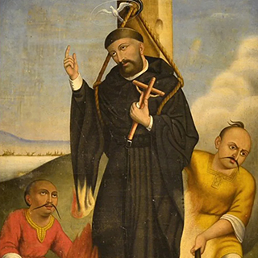

Nombre:
Bartolomé (Masculino)
Celebran:
Los Bartolomé suelen celebrar el
24-ago:San Bartolomé apóstol
Nació:
En el actual México
Falleció:
En Omura, en el actual Japón
Proceso:
Beatificadoel 22 de mayo de 1867
por Pío IX
Celebración:
2 de septiembre
Religioso:
De la orden de San Agustín